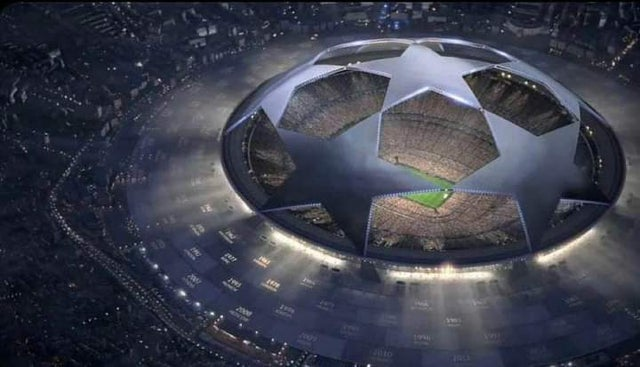

A CHAMPIONS LEAGUE (liga dos campeões) A Liga dos Campeões da UEFA (em inglês: UEFA Champions League) é uma competição anual de clubes de futebol a nível continental, organizada pela União das Associações Europeias de Futebol (UEFA) e disputada por clubes europeus. É um dos torneios mais prestigiados do mundo e a competição de clubes mais prestigiada no futebol europeu, disputada pelas equipas mais bem classificadas nos respectivos campeonato nacionais na época anterior, sendo o número de vagas atribuído consoante o ranking da UEFA. A final da Liga dos Campeões da UEFA é o evento esportivo anual mais visto em todo o mundo. A final da edição de 2012–13 teve o maior número de audiência até o momento, atraindo 360 milhões de telespectadores
Introduzida em 1992, a competição é a sucessora da Taça dos Clubes Campeões Europeus (português europeu) ou Copa dos Clubes Campeões Europeus (português brasileiro), que havia sido disputada desde 1955, acrescentando uma fase de grupos à competição, permitindo a participação de várias equipes de diversos países [2] A edição de 1992–93 foi inicialmente um torneio que havia apenas grupos, aberto apenas ao clube campeão de cada país. Durante a década de 1990, o formato foi expandido, incorporando uma fase pré qualificatória para incluir clubes que terminaram vice-campeão dos seus campeonatos nacionais.
Os times são divididos em quatro potes. O Pote 1 é composto pelo atual campeão (Real Madrid), pelo vencedor da Liga Europa (Eintracht Frankfurt) e pelos campeões dos seis países mais bem classificados no ranking que não se classificaram através de um dos títulos de 2021/22.